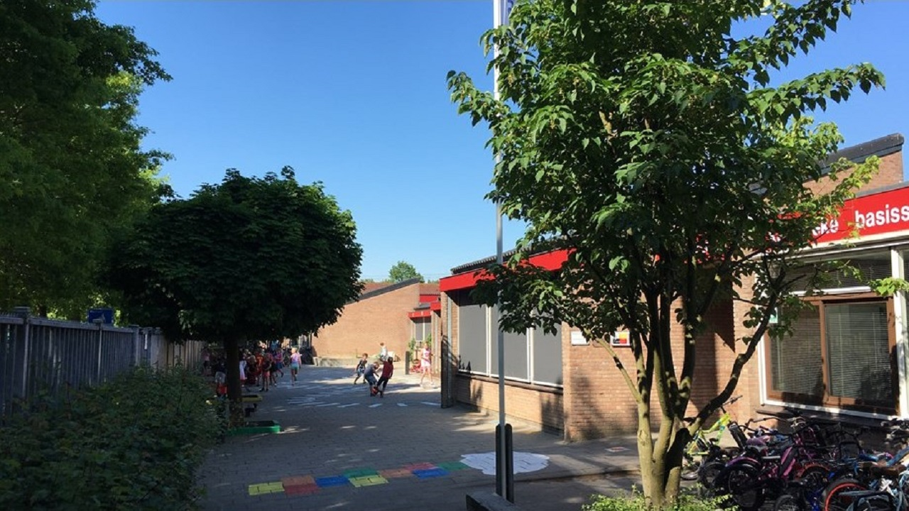
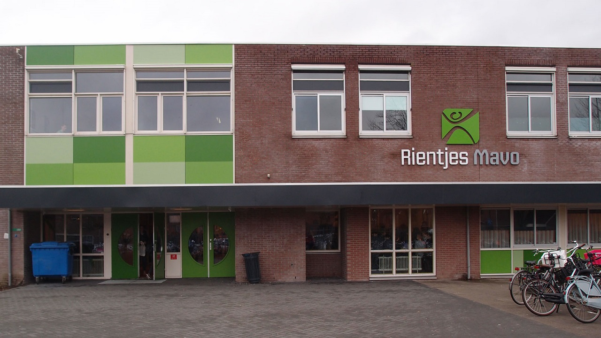
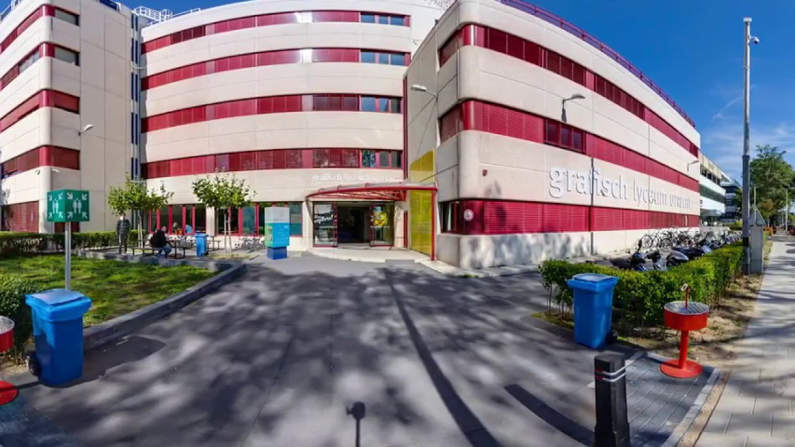

𝚂𝚌𝚑𝚘𝚘𝚕
Dit was de basisschool waar ik naartoe ging, ik heb hier veel meegemaakt. Ik vond het altijd leuk om te voetballen op het schoolplein en om te knikkeren met vrienden. Een van mijn favoriete school onderdelen was toch echt wel gym, ik had een hele aardige docent die ik af en toe boos kreeg doordat ik een voetbal te hard trapte in de gymzaal. Ook heb ik veel steun en hulp gekregen van de school toen mijn vader was overleden. Verder heb ik het er altijd heel gezellig gehad en nooit ruzie gehad met anderen.
Dit was de middelbare school waar ik naartoe ging, mijn zus, moeder en tante hebben hier ook op school gezeten. Ik voelde me nooit echt op mijn plek in het VMBO alles was altijd te makkelijk. Leerjaar 1 was mijn slechtste leerjaar als ik naar mijn cijfers terugkijk. Frans was vooral het minst leuke vak op school, ik vond het altijd nutteloos. Leerjaar 2 en 3 gingen vele malen beter. Wiskunde en Engels was ik altijd erg goed in, ik ging mijn examen jaar in met twee negens voor de vakken. Ik had zo'n goed rapport van klas 3 naar 4 dat ik eigenlijk al wist dat ik was geslaagd, zolang ik maar boven de 5,5 gemiddeld bleef. Ook net zoals op de basisschool was gym weer een van mijn favoriete vakken maar nu met Engels en Wiskunde erbij. Gym heb ik uiteindelijk afgesloten met een 9,6.
Dit is de school waar ik nu op zit. Het eerste leerjaar was echt een verassingspunt voor mij want ik wist niet precies wat mij te wachten stond. Plannen was zeker niet mijn sterkste punt hierdoor kwam ik vaak zoals bijvoorbeeld nu tijdens het maken van deze website in tijdsnood. Ik deed altijd alles aan het eind van de periode. Leerjaar 1 beviel me wel, leerjaar 2 tot zo ver wat minder. Ik hoop dat ik deze opleiding haal aangezien ik mijn toekomst niet in dit vakgebied zie, zelf weet ik ook nog niet wat ik mezelf wel zie doen. Maar tot die tijd moet ik goede cijfers blijven halen en gewoon voor mijn diploma gaan aangezien ik niet twee schooljaren wil weg gooien. Nu nog even genieten van het leuke moment van de opleiding zoals naar Praag gaan. Verder valt er niet zoveel meer te vertellen over mijn ervaring van de opleiding.